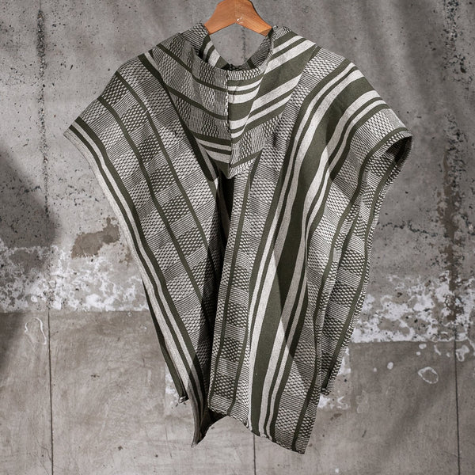

Las ruanas de Villa de Leyva son reconocidas por su alta calidad, tradición y belleza. El proceso de elaboración de estas prendas es completamente artesanal y requiere de gran habilidad y dedicación por parte de los artesanos.
Obtencion de lana
La lana utilizada para la elaboración de las ruanas proviene principalmente de las ovejas Merino Colombiano, una raza que se caracteriza por producir lana de alta calidad, fina y suave.
El proceso de obtención de la lana comienza con el esquilado de las ovejas, que se realiza una vez al año, generalmente entre los meses de marzo y mayo.
La lana esquilada se lava y se peina para eliminar las impurezas y las fibras más cortas.
La lana peinada se hila utilizando husos o ruecas, que son herramientas manuales que permiten transformar la fibra en un hilo continuo.
El hilado es un proceso que requiere de destreza y paciencia, ya que la lana debe ser hilada de manera uniforme para obtener un tejido de calidad.
lana
La lana puede ser teñida de diferentes colores utilizando tintes naturales o sintéticos.
Los tintes naturales se obtienen de plantas, insectos o minerales, mientras que los tintes sintéticos son producidos en laboratorio.
El teñido de la lana se realiza antes del tejido.
Ruanas
El tejido de la ruana se realiza en telares manuales, que son estructuras de madera que permiten entretejer los hilos de lana para crear la tela.
Existen diferentes tipos de telares, pero los más utilizados para la elaboración de ruanas son los telares horizontales de cuatro palos.
El tejido de la ruana es un proceso complejo que requiere de gran habilidad y coordinación por parte del artesano.
Control de calidad
Las ruanas de Villa de Leyva pasan por un estricto control de calidad para garantizar que cumplan con los altos estándares de la artesanía colombiana.
Este control se realiza en diferentes etapas del proceso de elaboración, desde la selección de la lana hasta el producto final.
Acabados
Una vez tejida la ruana, se realizan los acabados finales, que incluyen el corte de los hilos sobrantes, el lavado de la prenda y el planchado.
En algunos casos, las ruanas pueden ser decoradas con flecos, borlas o otros elementos decorativos.
Comercializacion
Las ruanas de Villa de Leyva se pueden encontrar en diferentes tiendas de artesanías y souvenirs en el municipio de Villa de Leyva y en otras ciudades de Colombia.
También se pueden comprar en línea a través de tiendas virtuales y plataformas de comercio electrónico.